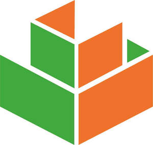
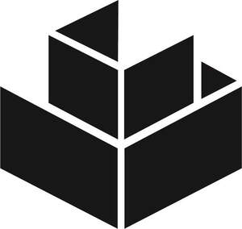

Trade Mark Journal No.2025/031 1 August 2025
UK00004235846 18 July 2025 (6,19,37,42)
Mark 1

Mark 2

- Class 6
- Metallic materials and articles of metal for use in building, construction, mass gravity and reinforced earth retaining structures, groundworks, earthworks, landscaping, civil engineering works, embankments, reinforcing and retaining structures; gabions, gabion mattresses; rock netting (wire mesh); modular building blocks of wire mesh; plastic coated metallic wire (non-electric), polymer coated metallic wire (non-electric); plastic coated metallic wire products (non-electric); polymer coated metallic wire products (non-electric); plastic coated metallic wire products (non-electric) for use in building, construction, mass gravity and reinforced earth retaining structures, groundworks, earthworks, landscaping, civil engineering works, embankments, reinforcing and retaining structures; polymer coated metallic wire products (non-electric) for use in building, construction, mass gravity and reinforced earth retaining structures, groundworks, earthworks, landscaping, civil engineering works, embankments, reinforcing and retaining structures; metallic materials and articles of metal for use in fencing; fencing for use in connection with gabions; fencing for use in connection with modular building blocks of wire mesh; fencing materials; fencing; fence posts; gates; parts and fittings for all the aforesaid goods.
- Class 19
- Non-metallic materials and articles for use in building, construction, mass gravity and reinforced earth retaining structures, groundworks, earthworks, landscaping, civil engineering works, embankments, reinforcing and retaining structures; materials and articles of wood or plastics for use in building, construction, mass gravity and reinforced earth retaining structures, groundworks, earthworks, landscaping, civil engineering works, embankments, reinforcing and retaining structures; recycled materials and articles of wood, plastic or concrete for use in building, construction, mass gravity and reinforced earth retaining structures, groundworks, earthworks, landscaping, civil engineering works, embankments, reinforcing and retaining structures; non-metallic reinforcing materials and articles for use in building, construction, mass gravity and reinforced earth retaining structures, groundworks, earthworks, landscaping, civil engineering works, embankments, reinforcing and retaining structures; gabions, not of metal; plastic coated metallic wire (non-electric), polymer coated metallic wire (non-electric); plastic coated metallic wire products (non-electric); polymer coated metallic wire products (non-electric); plastic coated metallic wire products (non-electric) for use in building, construction, mass gravity and reinforced earth retaining structures, groundworks, earthworks, landscaping, civil engineering works, embankments, reinforcing and retaining structures; polymer coated metallic wire products (non-electric) for use in building, construction, mass gravity and reinforced earth retaining structures, groundworks, earthworks, landscaping, civil engineering works, embankments, reinforcing and retaining structures; non-metallic wire; non-metallic wire products; non-metallic wire products for use in building, construction, mass gravity and reinforced earth retaining structures, groundworks, earthworks, landscaping, civil engineering works, embankments, reinforcing and retaining structures; non-metallic wire products for use in building, construction, mass gravity and reinforced earth retaining structures, groundworks, earthworks, landscaping, civil engineering works, embankments, reinforcing and retaining structures; rope and rope products for use in building, construction, mass gravity and reinforced earth retaining structures, groundworks, earthworks, landscaping, civil engineering works, embankments, reinforcing and retaining structures; geogrid; geocell; geosynthetics, geotextiles; cellular membrane systems; reinforcing and filtration mesh for use in building, construction, mass gravity and reinforced earth retaining structures, groundworks, earthworks, landscaping, civil engineering works, embankments, reinforcing and retaining structures; non-metallic materials and articles for use in fencing; fencing for use in connection with gabions; fencing for use in connection with modular building blocks of wire mesh; fencing materials; fencing; fence posts; gates; parts and fittings for all the aforesaid goods.
- Class 37
- Building and construction services; building, construction, repair and installation services in relation to mass gravity and reinforced earth retaining structures, groundworks, earthworks, landscaping, civil engineering works, embankments, reinforcing and retaining structures; building, construction, repair and installation services in relation to gabions; project management services and on-site project management services in relation to building, construction, mass gravity and reinforced earth retaining structures, groundworks, earthworks, landscaping, civil engineering works, embankments, reinforcing and retaining structures; project management services and on-site project management services in relation to fencing; consultancy, information and advisory services relating to all the aforementioned.
- Class 42
- Design services relating to mass gravity and reinforced earth retaining structures; design services relating to building, construction repair and installation services in relation to groundworks, earthworks, landscaping, civil engineering works, reinforcing and retaining structures, embankments; technical advice and product specification in relation to gabions, mass gravity & reinforced earth retaining structures, groundworks, earthworks, landscaping, civil engineering works, embankments, reinforcing and retaining structures; design services relating to fencing; technical advice and product specification in relation to fencing; consultancy, information and advisory services relating to all the aforementioned.
Enviromesh Group Limited
Representative: Bryers Intellectual Property Ltd